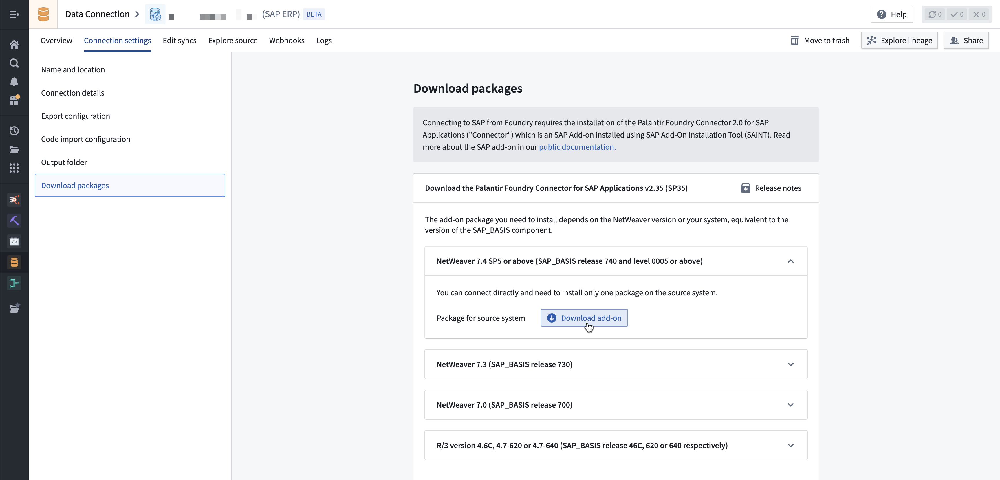
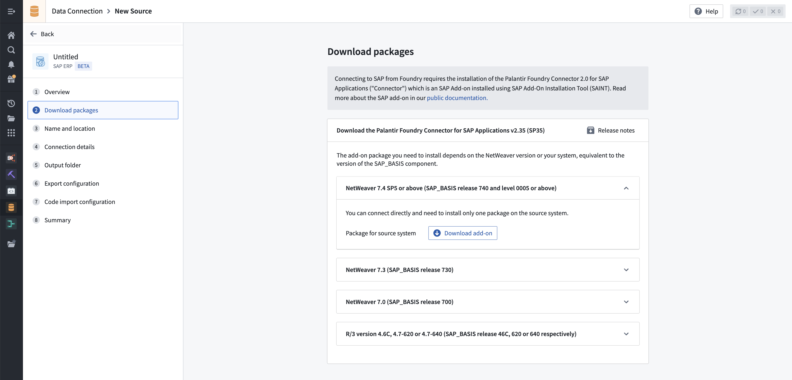

Download the Palantir Foundry Connector 2.0 for SAP Applications add-on
You can download the latest Palantir Foundry Connector 2.0 for SAP Applications add-on from your Foundry enrollment, alongside release notes. Once downloaded, share the packages with the team responsible for installing or updating the add-on, such as the SAP Basis team.

For existing installations, follow the steps below to find this section:
- Navigate to the existing Foundry SAP source.
- Select the Connection settings tab.
- Select the Download packages step in the left panel.
For new installations, follow the steps below to find this section:
- Navigate to Data Connection.
- Select the Sources tab, then New source in the top right.
- Select the SAP ERP or SAP SLT tile, depending on the type of SAP system you are connecting to.
- The second step of the installation wizard is Download packages.

- On the Download packages page, find the section relevant for your installation depending on the SAP_BASIS (the technical component version, applicable to both SAP NetWeaver and SAP S/4HANA systems) version of the SAP system you are connecting to.
- Select Download add-on to download a ZIP file containing the add-on.
- Release notes of the add-on can also be downloaded by selection Release notes at the top right of the page.
:::callout{theme="neutral"}
For SAP_BASIS versions below 7.4, a gateway server is required, so two packages need to be downloaded and installed.
:::
Review additional information regarding SAP add-on installation.